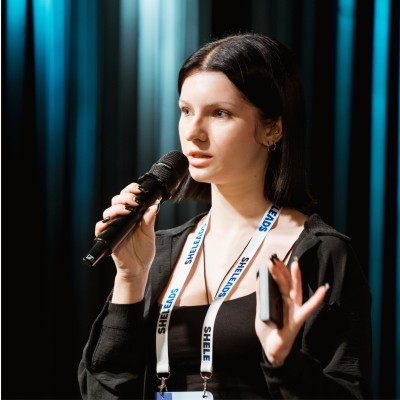
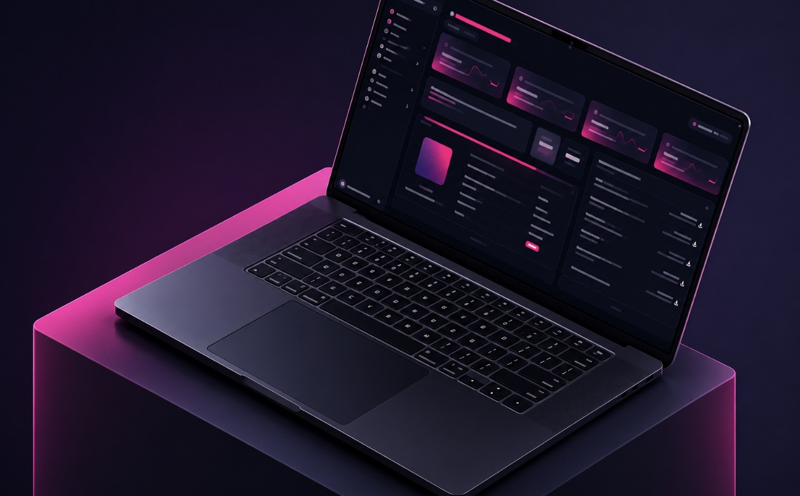
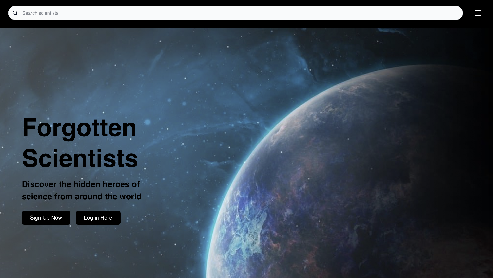
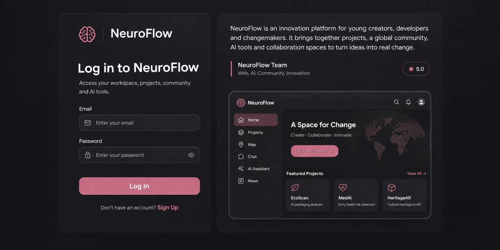
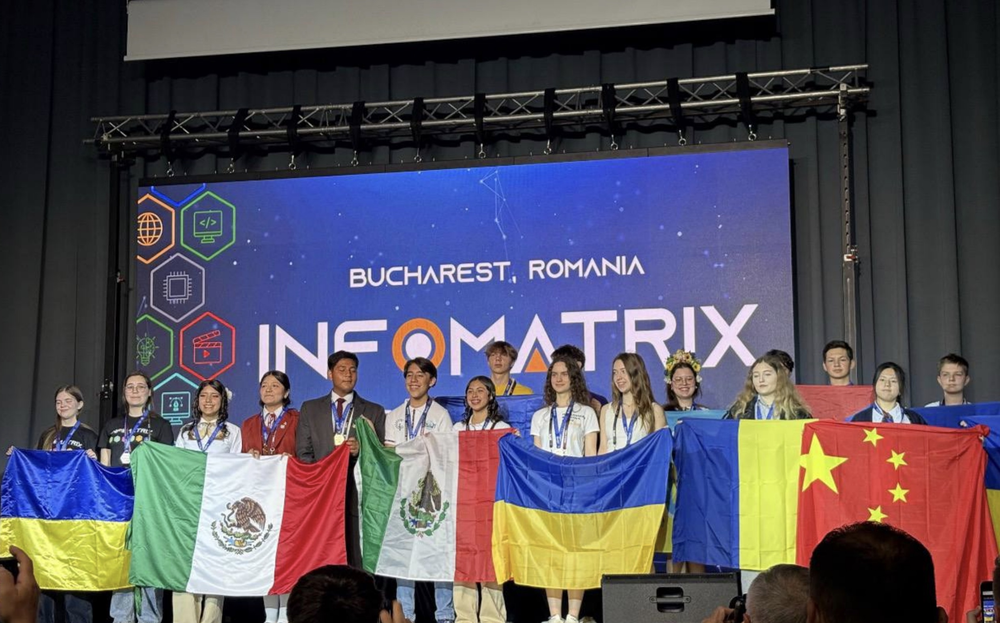

Years old
Fullstack Developer
Hello I’m
Kseniia
Gubenko
17-year-old computer science student | 3+ years building technical products | 45K+ visits on one project | AI, healthtech & cybersecurity

Years of technical experience
Visits on one project
Scientist profiles published
FULL STACK DEVELOPER
Hello, I'm
Kseniia
Gubenko
17-year-old computer science student | 3+ years building technical products | 45K+ visits on one project | AI, healthtech & cybersecurity
17 Years old
3+ Years of experience
45K+ Visits on one project
100+ Profiles published
Education
Gymnasium A+
11.94/12GPA · High School
High School
English-medium program with a focus on mathematics, research, academic writing, and independent study.
Harvard VTSP
42%Merit scholarship
Merit Scholar
Selective pre-college program in startup innovation, product strategy, and venture technology. Estimated acceptance rate: ~13%.
uBoost
20Person cohort represented
Business & Market Foundations
Selected from approximately 360 applicants for uBoost’s SheLeads 2.0. Studied finance, marketing, market mechanics, and startup fundamentals while representing a 20-person cohort.
Short Profile

Fluent in Ukrainian,
Russian, English, Chinese
and French (IELTS 7.5)
My primary
tech stackPython,
TypeScript
tech stackPython,
TypeScript
Computer visionReactFastAPINext.jsSQLSupabase
Designer
KG
STUDENT RESEARCHER
AI + HEALTHTECH
The Inside ScoopFounder, researcher,
team lead & educator
team lead & educator
A small selection of recent projects

Forgotten Scientists
Educational platform restoring overlooked histories in science.
GOLDEN MINUTEFirst aid is a simulation,
Start scenario
First aid is a simulation,
not a test.
Start scenarioAI-FIRST LEARNING MVP
Golden Minute
AI first-aid training with interactive emergency scenarios.

Orion Aviation Dashboard
Aviation intelligence dashboard built with OpenSky data.

NeuroFlow Platform
Collaborative innovation ecosystem with AI tools & P2P chat.
My Experience
IOAI Ukraine National Selection
National finalist, ranked 11th of 2,300 participants after three selection stages.
INFOMATRIX International Hackathon
Bronze Medal and 3rd place among 25+ international teams.
Global Logic & Reasoning Competition
Finalist in an international analytical reasoning and problem-solving competition.
AntiSchool Mathematics Olympiad
1st Place in the Grade 11 division of the All-Ukrainian competition.
My journey report
I have built software across research labs, startups, international programs, hackathons, and nonprofit teams. Here is the path behind the current work.
2020
Early Exploration
My journey in technology began with simple coding tutorials on YouTube. Back then, I was simply exploring out of curiosity, following beginner lessons without realizing that programming would eventually become such a significant part of my life.

2024
First Research Experience
After consistently achieving top grades in Computer Science, my teacher encouraged me to pursue my first research project. I explored how UAV-generated data, including aerial photographs, could be secured through a blockchain-based system. I modelled a prototype in which data was cryptographically hashed and its integrity could be verified through blockchain records, using Python, Solidity, and JavaScript.
2025
NeuroFlow & International Recognition
Motivated by my first research experience, I joined an international hackathon, INFOMATRIX 2025, with my team from Ukraine. Within just three days, we developed NeuroFlow, our project, which earned us a Bronze Medal at the international competition. It was my first experience turning a technical idea into a working project under intense time constraints and presenting it on an international stage.

2026
Independent Projects & Leadership
I started sharing my knowledge through volunteering at Inclusive Academy and PyGirls, helping younger students explore technology. At the same time, I founded Forgotten Scientists, an educational platform dedicated to recognizing overlooked scientists, and independently developed most of its core infrastructure using Next.js, React, TypeScript, and Supabase. What began as an independent initiative has grown into an international team of 10+ students, with over 100 scientist profiles published and 45,000+ social media profile visits. We continue expanding the platform and collaborating with other educational initiatives to bring overlooked scientific contributions to a wider audience.

Next chapter
The story continues.
More research, stronger products, and new questions worth pursuing.
Let’s Talk
What led you here? What are you looking for? I’d love to hear from you over a virtual coffee chat.